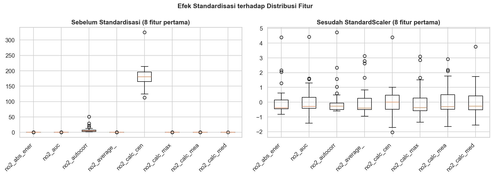
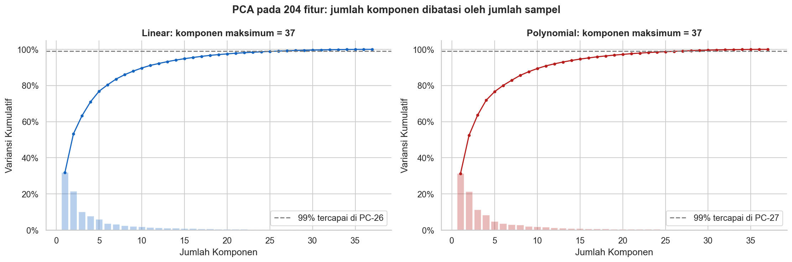
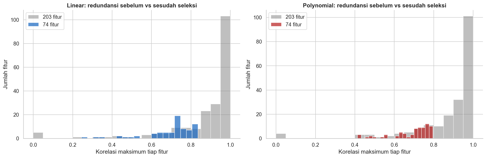
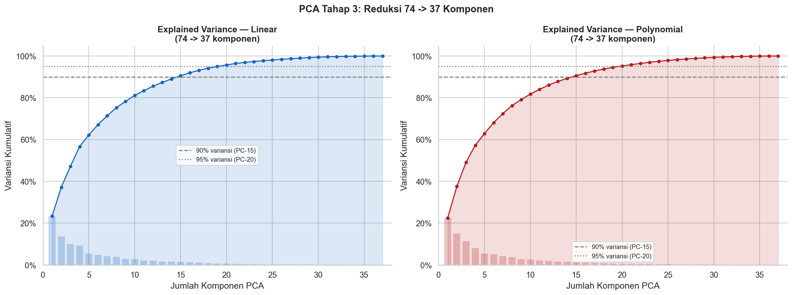

Tahap 2 - Reduksi Dimensi: 204 -> 203 -> 74 -> 37#
Pada tahap ini dilakukan reduksi dimensi secara bertahap untuk memperoleh representasi data yang lebih ringkas, informatif, dan siap digunakan pada tahap pemodelan berikutnya.
Urutan reduksi yang digunakan adalah:
204 fitur -> 203 fitur -> 74 fitur -> 37 komponen
Pendekatan ini tidak langsung menggunakan PCA sejak awal. Reduksi awal dilakukan menggunakan seleksi berbasis korelasi untuk mengurangi fitur yang redundan terlebih dahulu. Setelah jumlah fitur menjadi lebih kecil dan sesuai dengan batas data, PCA digunakan pada tahap akhir untuk menghasilkan representasi yang lebih ringkas.
Mengapa tidak PCA di setiap tahap?#
PCA sangat berguna untuk mereduksi dimensi, tetapi penggunaannya harus memperhatikan ukuran data. Pada dataset ini hanya terdapat 37 sampel/wilayah, sedangkan jumlah fitur awal mencapai 204 fitur.
⚠️ Warning: PCA tidak dapat digunakan secara langsung untuk menghasilkan lebih banyak komponen daripada batas dimensi yang ditentukan oleh jumlah sampel dan jumlah fitur. Dengan hanya 37 sampel, PCA yang langsung diterapkan pada 204 fitur akan mengalami keterbatasan dimensi dan dapat memunculkan error ketika jumlah komponen yang diminta melebihi batas yang diperbolehkan.
Oleh karena itu, reduksi dilakukan secara bertahap:
204 -> 203 fitur menggunakan seleksi korelasi awal.
203 -> 74 fitur dengan menghapus fitur yang redundan atau memiliki korelasi sangat tinggi.
74 -> 37 komponen menggunakan PCA pada tahap akhir.
📝 Note: Strategi ini dipilih agar proses reduksi tetap valid terhadap jumlah sampel yang tersedia. Seleksi korelasi digunakan terlebih dahulu untuk mengurangi redundansi fitur, kemudian PCA digunakan setelah dimensi data berada pada rentang yang sesuai.
Dengan pendekatan tersebut, setiap tahap mempunyai fungsi yang jelas: seleksi korelasi mengurangi redundansi fitur, sedangkan PCA melakukan kompresi representasi menjadi komponen yang lebih ringkas.
2.1 Import Library & Load Data Tahap 1#
Tahap pertama dimulai dengan mengimpor library yang dibutuhkan untuk pengolahan data dan reduksi dimensi. Data yang digunakan merupakan hasil dari Tahap 1, yaitu dua representasi data:
Linear
Polynomial (Poly)
Kedua representasi tersebut masih memiliki bentuk awal 37 sampel dan 204 fitur.
import warnings
warnings.filterwarnings('ignore')
import os
import pickle
import numpy as np
import pandas as pd
import matplotlib.pyplot as plt
import seaborn as sns
from sklearn.preprocessing import StandardScaler
from sklearn.decomposition import PCA
OUTPUT_DIR = 'output'
plt.rcParams['figure.figsize'] = (13, 5)
sns.set_theme(style='whitegrid', font_scale=1.05)
# ==========================================
# 2.1 LOAD DATA TAHAP 1
# ==========================================
print("=== 2.1 Memuat Data Tahap 1 ===")
with open(os.path.join(OUTPUT_DIR, 'tahap1_data.pkl'), 'rb') as f:
d = pickle.load(f)
X_linear, X_poly = d['X_linear'], d['X_poly']
meta_linear, meta_poly = d['meta_linear'], d['meta_poly']
N_SAMPEL = X_poly.shape[0]
print(f'Linear: {X_linear.shape}, Poly: {X_poly.shape}')
=== 2.1 Memuat Data Tahap 1 ===
Linear: (37, 204), Poly: (37, 204)
Berdasarkan keluaran tersebut, dapat diketahui bahwa kedua representasi memiliki jumlah sampel yang sama, yaitu 37 wilayah, dengan masing-masing memiliki 204 fitur.
2.2 Standardisasi Data (StandardScaler)#
Sebelum proses seleksi fitur dan PCA dilakukan, data perlu melalui proses standardisasi. Standardisasi bertujuan menyetarakan skala setiap fitur sehingga fitur dengan rentang nilai yang besar tidak mendominasi fitur lainnya.
Metode yang digunakan adalah StandardScaler, yang mengubah data sehingga setiap fitur memiliki nilai rata-rata mendekati 0 dan standar deviasi mendekati 1.
# ==========================================
# 2.2 STANDARDISASI
# ==========================================
print("\n=== 2.2 Standardisasi Data ===")
scaler_lin, scaler_poly = StandardScaler(), StandardScaler()
Xs_linear = scaler_lin.fit_transform(X_linear)
Xs_poly = scaler_poly.fit_transform(X_poly)
# (Grafik 1: Standardisasi)
n_viz = min(8, X_poly.shape[1])
cols_viz = list(X_poly.columns[:n_viz])
lbl = [c[:12] for c in cols_viz]
fig, axes = plt.subplots(1, 2, figsize=(14, 5))
axes[0].boxplot([X_poly[c].values for c in cols_viz])
axes[0].set_xticklabels(lbl, rotation=45, ha='right')
axes[0].set_title(f'Sebelum Standardisasi ({n_viz} fitur pertama)', fontweight='bold')
axes[1].boxplot([Xs_poly[:, i] for i in range(n_viz)])
axes[1].set_xticklabels(lbl, rotation=45, ha='right')
axes[1].set_title(f'Sesudah StandardScaler ({n_viz} fitur pertama)', fontweight='bold')
plt.suptitle('Efek Standardisasi terhadap Distribusi Fitur', fontsize=13, fontweight='bold')
plt.tight_layout()
plt.savefig(f'{OUTPUT_DIR}/04_standardisasi.png', dpi=150, bbox_inches='tight')
plt.close()

📝 Note: Standardisasi sangat penting terutama sebelum PCA karena PCA bekerja berdasarkan varians data. Dengan skala yang telah diseragamkan, kontribusi masing-masing fitur dapat dibandingkan secara lebih adil.
Setelah standardisasi dilakukan, data siap digunakan untuk menentukan batas dimensi yang dapat diproses oleh PCA.
2.3 Batas PCA: Berapa Dimensi yang Benar-benar Informatif?#
Pada dataset ini terdapat 37 sampel. Secara umum, jumlah komponen PCA yang dapat dipertahankan dibatasi oleh nilai minimum antara jumlah sampel dan jumlah fitur. Karena jumlah sampel hanya 37, maka jumlah komponen PCA yang dapat diambil tidak boleh melebihi 37 komponen.
Hal tersebut menjadi alasan utama mengapa PCA tidak digunakan sejak tahap awal ketika data masih memiliki 204 fitur. Sebelum PCA diterapkan, fitur terlebih dahulu diseleksi agar redundansi berkurang dan struktur data menjadi lebih efisien.
# ==========================================
# 2.3 BATAS PCA (Visualisasi 204 fitur)
# ==========================================
fig, axes = plt.subplots(1, 2, figsize=(15, 5))
for ax, Xs, nama, color in [(axes[0], Xs_linear, 'Linear', '#1565C0'), (axes[1], Xs_poly, 'Polynomial', '#B71C1C')]:
p_full = PCA(random_state=42).fit(Xs)
cum = np.cumsum(p_full.explained_variance_ratio_)
k = np.arange(1, len(cum) + 1)
n_99 = int(np.argmax(cum >= 0.99) + 1)
ax.bar(k, p_full.explained_variance_ratio_, color=color, alpha=0.3)
ax.plot(k, cum, 'o-', color=color, markersize=3)
ax.axhline(0.99, color='gray', linestyle='--', label=f'99% tercapai di PC-{n_99}')
ax.set_title(f'{nama}: komponen maksimum = {p_full.n_components_}', fontweight='bold')
ax.set_xlabel('Jumlah Komponen'); ax.set_ylabel('Variansi Kumulatif')
ax.yaxis.set_major_formatter(plt.FuncFormatter(lambda y, _: f'{y:.0%}'))
ax.legend(); ax.spines[['top', 'right']].set_visible(False)
plt.suptitle('PCA pada 204 fitur: jumlah komponen dibatasi oleh jumlah sampel', fontsize=14, fontweight='bold')
plt.tight_layout()
plt.savefig(f'{OUTPUT_DIR}/04a_batas_pca.png', dpi=150, bbox_inches='tight')
plt.close()

⚠️ Warning: Pada kondisi 37 sampel dan 204 fitur, meminta PCA menghasilkan komponen yang melebihi batas yang diperbolehkan dapat menyebabkan error. Oleh sebab itu, PCA ditempatkan pada tahap akhir setelah seleksi fitur.
Hasil analisis pada bagian ini menunjukkan bahwa 37 komponen merupakan batas maksimum yang relevan untuk representasi PCA pada dataset ini.
2.4 Fungsi Bantu#
Untuk menjaga kode tetap terstruktur dan menghindari pengulangan proses, dibuat beberapa fungsi bantu. Fungsi-fungsi tersebut digunakan untuk menangani proses seperti seleksi fitur berbasis korelasi, pemeriksaan bentuk data, dan proses transformasi pada setiap representasi.
Dengan pendekatan ini, proses pada data Linear dan Poly dapat dilakukan menggunakan alur yang konsisten.
# ==========================================
# 2.4 FUNGSI BANTU SELEKSI FITUR
# ==========================================
def kurangi_fitur(X_df, target):
kolom = list(X_df.columns)
dibuang = []
konstan = [c for c in kolom if X_df[c].std() == 0 or np.isnan(X_df[c].std())]
for c in konstan[:max(0, len(kolom) - target)]: dibuang.append(c)
sisa = [c for c in kolom if c not in dibuang]
C = np.array(X_df[sisa].corr().abs().fillna(0), dtype=float)
np.fill_diagonal(C, 0.0)
aktif = np.ones(len(sisa), dtype=bool)
while aktif.sum() > target:
idx = np.where(aktif)[0]
sub = C[np.ix_(idx, idx)]
i, j = np.unravel_index(np.argmax(sub), sub.shape)
gi, gj = idx[i], idx[j]
hapus = gi if C[gi, idx].mean() >= C[gj, idx].mean() else gj
aktif[hapus] = False
dibuang.append(sisa[hapus])
return [c for c, a in zip(sisa, aktif) if a], dibuang
def jalankan_pca(X_scaled, n_comp, nama):
pca = PCA(n_components=n_comp, random_state=42)
X_pca = pca.fit_transform(X_scaled)
cumvar = np.cumsum(pca.explained_variance_ratio_)
print(f'[{nama}] {X_scaled.shape[1]} dimensi -> {n_comp} komponen')
return pca, X_pca, cumvar
📝 Note: Fungsi bantu dibuat agar setiap tahap reduksi mempunyai prosedur yang sama pada kedua representasi data. Hal ini membantu menjaga konsistensi hasil dan memudahkan proses validasi.
2.5 Tahap 1: 204 -> 203 Fitur#
Pada tahap pertama reduksi, dilakukan penghapusan awal terhadap satu fitur yang tidak diperlukan sehingga jumlah fitur berkurang dari:
204 fitur -> 203 fitur
Reduksi ini merupakan langkah awal sebelum dilakukan seleksi fitur yang lebih ketat pada tahap berikutnya.
# ==========================================
# 2.5 TAHAP 1 (204 -> 203 Fitur)
# ==========================================
print("\n=== 2.5 & 2.6 Seleksi Fitur (204 -> 203 -> 74) ===")
feat203_lin, _ = kurangi_fitur(X_linear, 203)
feat203_poly, _ = kurangi_fitur(X_poly, 203)
X_lin203_df, X_poly203_df = X_linear[feat203_lin], X_poly[feat203_poly]
Tahap ini menghasilkan dua representasi data dengan struktur:
Representasi |
Sebelum |
Sesudah |
|---|---|---|
Linear |
204 fitur |
203 fitur |
Poly |
204 fitur |
203 fitur |
📝 Note: Pengurangan dari 204 menjadi 203 fitur bukanlah tahap PCA. Reduksi dilakukan sebagai bagian dari proses seleksi fitur awal agar struktur data menjadi lebih sederhana sebelum masuk ke seleksi redundansi.
2.6 Tahap 2: 203 -> 74 Fitur#
Setelah tahap awal, dilakukan seleksi fitur berdasarkan korelasi antarfitur. Tujuannya adalah menghapus fitur-fitur yang memberikan informasi yang sangat mirip atau redundant.
Apabila dua fitur memiliki korelasi yang sangat tinggi, salah satu fitur dapat dipertahankan sementara fitur lainnya dihapus. Dengan demikian, jumlah fitur dapat dikurangi secara signifikan tanpa mempertahankan terlalu banyak informasi yang berulang.
# ==========================================
# 2.6 TAHAP 2 (203 -> 74 Fitur)
# ==========================================
feat74_lin, drop2_lin = kurangi_fitur(X_lin203_df, 74)
feat74_poly, drop2_poly = kurangi_fitur(X_poly203_df, 74)
X_lin74_df, X_poly74_df = X_linear[feat74_lin], X_poly[feat74_poly]
print(f'Sisa fitur Linear: {len(feat74_lin)}, Poly: {len(feat74_poly)}')
# (Grafik 3: Histogram Redundansi)
def max_corr(df):
C = np.array(df.corr().abs().fillna(0), dtype=float); np.fill_diagonal(C, 0)
return C.max(axis=1)
fig, axes = plt.subplots(1, 2, figsize=(15, 5))
for ax, a, b, nama, color in [(axes[0], X_lin203_df, X_lin74_df, 'Linear', '#1565C0'), (axes[1], X_poly203_df, X_poly74_df, 'Polynomial', '#B71C1C')]:
ax.hist(max_corr(a), bins=20, alpha=0.5, color='gray', label='203 fitur')
ax.hist(max_corr(b), bins=20, alpha=0.7, color=color, label='74 fitur')
ax.set_xlabel('Korelasi maksimum tiap fitur'); ax.set_ylabel('Jumlah fitur')
ax.set_title(f'{nama}: redundansi sebelum vs sesudah seleksi', fontweight='bold')
ax.legend(); ax.spines[['top', 'right']].set_visible(False)
plt.tight_layout()
plt.savefig(f'{OUTPUT_DIR}/05_seleksi_fitur.png', dpi=150, bbox_inches='tight')
plt.close()

Hasil seleksi menunjukkan bahwa kedua representasi data berhasil direduksi menjadi 74 fitur.
=== 2.5 & 2.6 Seleksi Fitur (204 -> 203 -> 74) ===
Sisa fitur Linear: 74, Poly: 74
Ringkasan reduksi fitur dapat dilihat pada tabel berikut:
Representasi |
Awal |
Setelah Seleksi Awal |
Hasil Seleksi Korelasi |
|---|---|---|---|
Linear |
204 |
203 |
74 |
Poly |
204 |
203 |
74 |
📝 Note: Seleksi korelasi pada tahap ini berfungsi untuk mengurangi redundansi, bukan untuk membentuk komponen baru. Oleh karena itu, fitur yang tersisa masih merupakan fitur asli dari hasil ekstraksi sebelumnya.
Setelah jumlah fitur menjadi 74, data sudah berada pada ukuran yang lebih sesuai untuk dilanjutkan ke proses PCA.
2.7 Tahap 3: 74 -> 37 Komponen (PCA)#
Tahap terakhir menggunakan Principal Component Analysis (PCA) untuk mengubah 74 fitur menjadi 37 komponen utama.
PCA bekerja dengan mencari kombinasi linear dari fitur-fitur yang mampu mempertahankan variasi data sebanyak mungkin. Hasilnya bukan lagi fitur asli, melainkan komponen baru yang mewakili informasi utama dari seluruh fitur.
# ==========================================
# 2.7 TAHAP 3 (PCA 74 -> 37)
# ==========================================
print("\n=== 2.7 PCA (74 -> 37 Komponen) ===")
Xs_lin74 = StandardScaler().fit_transform(X_lin74_df)
Xs_poly74 = StandardScaler().fit_transform(X_poly74_df)
pca_lin, X_lin37, cv_lin = jalankan_pca(Xs_lin74, 37, 'Linear')
pca_poly, X_poly37, cv_poly = jalankan_pca(Xs_poly74, 37, 'Poly')
# (Grafik 4: PCA Tahap Akhir)
fig, axes = plt.subplots(1, 2, figsize=(16, 6))
pcs = np.arange(1, 38)
for ax, cumvar, pca_obj, nama, color in [(axes[0], cv_lin, pca_lin, 'Linear', '#1565C0'), (axes[1], cv_poly, pca_poly, 'Polynomial', '#B71C1C')]:
ax.fill_between(pcs, cumvar, alpha=0.15, color=color)
ax.plot(pcs, cumvar, 'o-', color=color, markersize=4)
ax.bar(pcs, pca_obj.explained_variance_ratio_, alpha=0.25, color=color, width=0.8)
for thresh, ls in [(0.90, '--'), (0.95, ':')]:
n_t = int(np.argmax(cumvar >= thresh) + 1)
ax.axhline(thresh, color='gray', linestyle=ls, linewidth=1.5, label=f'{thresh:.0%} variansi (PC-{n_t})')
ax.set_xlim(0, 38); ax.set_ylim(0, 1.05)
ax.yaxis.set_major_formatter(plt.FuncFormatter(lambda y, _: f'{y:.0%}'))
ax.set_xlabel('Jumlah Komponen PCA'); ax.set_ylabel('Variansi Kumulatif')
ax.set_title(f'Explained Variance — {nama}\n(74 -> 37 komponen)', fontweight='bold')
ax.legend(fontsize=9); ax.spines[['top', 'right']].set_visible(False); ax.grid(True)
plt.suptitle('PCA Tahap 3: Reduksi 74 -> 37 Komponen', fontsize=14, fontweight='bold')
plt.tight_layout()
plt.savefig(f'{OUTPUT_DIR}/06_pca_tahap3.png', dpi=150, bbox_inches='tight')
plt.close()

=== 2.7 PCA (74 -> 37 Komponen) ===
[Linear] 74 dimensi -> 37 komponen
[Poly] 74 dimensi -> 37 komponen
Hasil tersebut menunjukkan bahwa:
Representasi Linear berhasil direduksi dari 74 fitur menjadi 37 komponen.
Representasi Poly berhasil direduksi dari 74 fitur menjadi 37 komponen.
📝 Note: Berbeda dari seleksi fitur pada tahap sebelumnya, PCA menghasilkan representasi baru berupa komponen utama. Setiap komponen merupakan kombinasi dari fitur-fitur sebelumnya.
Dengan demikian, alur reduksi dimensi telah selesai:
204 -> 203 -> 74 -> 37
2.8 Ringkasan Semua Representasi Data#
Setelah seluruh proses reduksi selesai, tersedia beberapa representasi data yang menggambarkan kondisi dataset pada setiap tahap.
Representasi |
Jumlah Sampel |
Jumlah Fitur/Komponen |
Keterangan |
|---|---|---|---|
Linear Tahap 1 |
37 |
204 |
Data awal hasil Tahap 1 |
Poly Tahap 1 |
37 |
204 |
Data awal hasil Tahap 1 |
Linear Setelah Reduksi Awal |
37 |
203 |
Hasil seleksi awal |
Poly Setelah Reduksi Awal |
37 |
203 |
Hasil seleksi awal |
Linear Setelah Seleksi Korelasi |
37 |
74 |
Fitur redundan telah dikurangi |
Poly Setelah Seleksi Korelasi |
37 |
74 |
Fitur redundan telah dikurangi |
Linear PCA |
37 |
37 |
Hasil PCA tahap akhir |
Poly PCA |
37 |
37 |
Hasil PCA tahap akhir |
Secara keseluruhan terdapat 8 representasi data yang dapat digunakan untuk analisis pada tahap berikutnya.
📝 Note: Penyimpanan beberapa representasi sekaligus memungkinkan proses eksperimen pada Tahap 3 dilakukan secara lebih fleksibel. Setiap representasi dapat dibandingkan untuk melihat pengaruh reduksi dimensi terhadap performa clustering.
Alur lengkap reduksi dapat diringkas sebagai berikut:
Tahap 1
204 fitur
↓
Seleksi awal
203 fitur
↓
Seleksi korelasi
74 fitur
↓
PCA
37 komponen
↓
Tahap 3
Eksperimen Clustering & Silhouette Analysis
2.9 Simpan Hasil untuk Tahap 3#
Seluruh representasi data hasil reduksi kemudian disimpan agar dapat digunakan kembali pada Tahap 3, tanpa perlu mengulang proses preprocessing dan reduksi dimensi.
# ==========================================
# 2.8 & 2.9 SIMPAN DATA UNTUK TAHAP 3
# ==========================================
representasi = {
'Linear-204': Xs_linear, 'Linear-203': StandardScaler().fit_transform(X_lin203_df),
'Linear-74' : Xs_lin74, 'Linear-37' : X_lin37,
'Poly-204' : Xs_poly, 'Poly-203' : StandardScaler().fit_transform(X_poly203_df),
'Poly-74' : Xs_poly74, 'Poly-37' : X_poly37,
}
save_data = {
'representasi': representasi, 'meta_linear': meta_linear, 'meta_poly': meta_poly,
'X_linear': X_linear, 'X_poly': X_poly,
'feat203_lin': feat203_lin, 'feat203_poly': feat203_poly,
'feat74_lin': feat74_lin, 'feat74_poly': feat74_poly,
'cv_lin': cv_lin, 'cv_poly': cv_poly,
}
save_path = os.path.join(OUTPUT_DIR, 'tahap2_pca.pkl')
with open(save_path, 'wb') as f:
pickle.dump(save_data, f)
print(f'\nData (8 representasi) berhasil disimpan di: {os.path.abspath(save_path)}')
print('-> Lanjut ke Tahap 3: Eksperimen Clustering & Silhouette Analysis')
Data (8 representasi) berhasil disimpan di: /content/output/tahap2_pca.pkl
-> Lanjut ke Tahap 3: Eksperimen Clustering & Silhouette Analysis
📝 Note: File hasil pada tahap ini menjadi input utama untuk eksperimen clustering pada Tahap 3. Dengan menyimpan seluruh representasi, setiap skenario clustering dapat dijalankan secara konsisten menggunakan data yang sama.